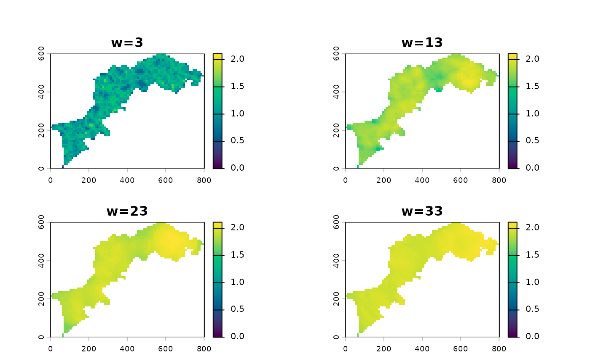
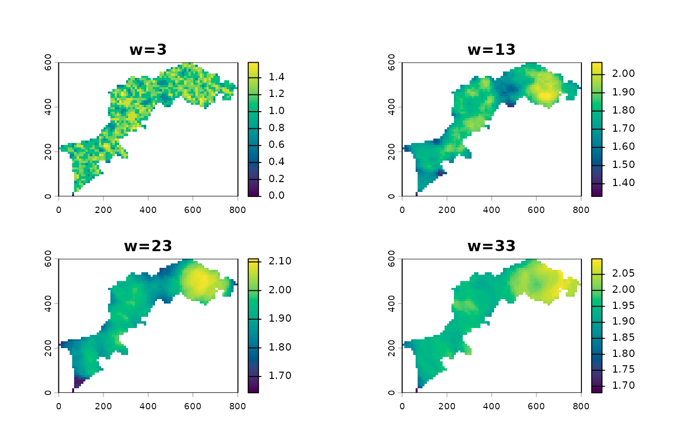

For what we have to represent, this is a better plot for SpatRaster
than base terra's plot. The main benefit being
sharing the legend across monoscale maps.
Arguments
- x
- palette
one of grDevices::hcl.colors palette description (default to
viridis)- asp
target aspect for the layout (default to 1 that is a square)
- ncol
integer number of columns for the layout, if provided
aspis ignored- title
for the plot, if missing use
names(x)- ...
additional parameters to single
plotcall
Examples
# first calculate a small and simple MHM
l <- import_example("l1.tif") %>%
raster_resample(0.1) %>%
MHM(window=c(3, 13, 23, 33), fun=richness)
# then let the fun begins
p(l) # compare with plot(l)

p(l, palette = "RdYlBu", ncol=1)
